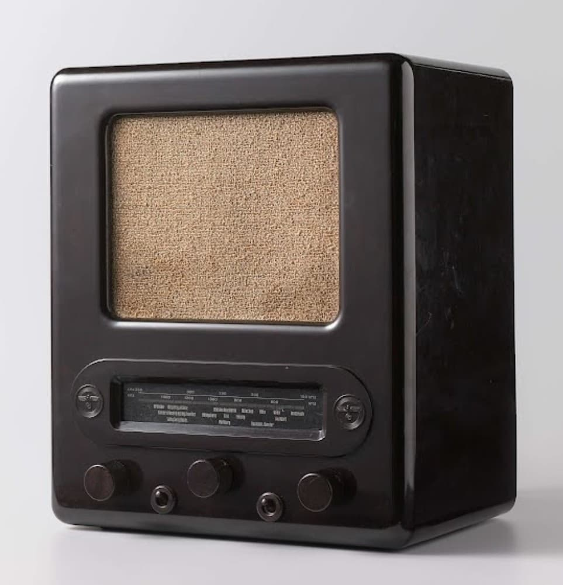

La propagande nazie désigne l’ensemble des moyens utilisés par le régime d’Adolf Hitler pour influencer, contrôler et modeler la pensée de la population allemande. Elle visait à créer une adhésion totale au régime, à son chef et à son idéologie, tout en éliminant toute opposition ou esprit critique.
Le régime nazi a utilisé tous les canaux disponibles pour diffuser ses messages :
La propagande reposait sur des thèmes simples et répétés :
Dirigé par Joseph Goebbels, le ministère du Reich à l’Éducation du peuple et à la Propagande contrôlait toutes les formes de communication. Rien ne pouvait être publié, diffusé ou projeté sans son autorisation. Ce contrôle total permit au régime de façonner la perception du monde selon ses propres intérêts.
La propagande a transformé la société allemande en une communauté où la pensée critique était remplacée par l’adhésion émotionnelle. Elle a contribué à la mise en œuvre des politiques du régime, en préparant psychologiquement la population à accepter la guerre et la persécution.
Aujourd’hui, l’étude de la propagande nazie permet de comprendre comment un régime totalitaire peut manipuler les masses. Les musées et mémoriaux rappellent l’importance de la vigilance face aux discours de haine et à la manipulation de l’information.